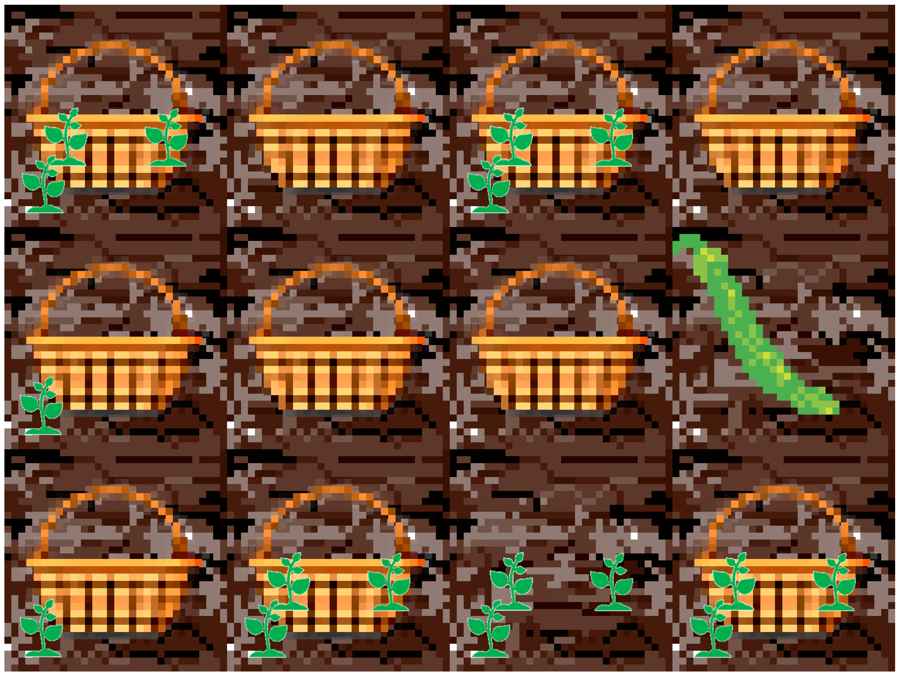
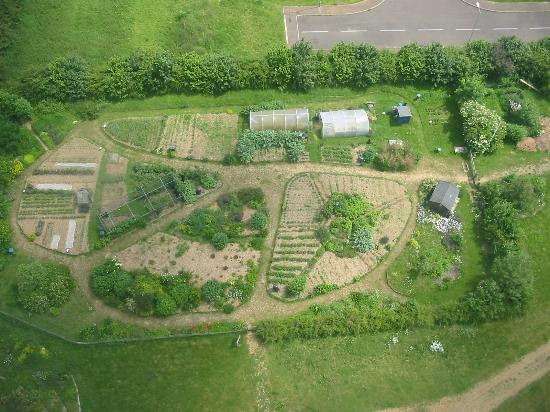
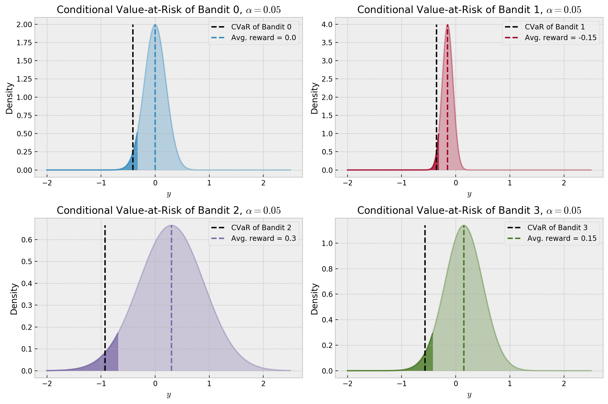
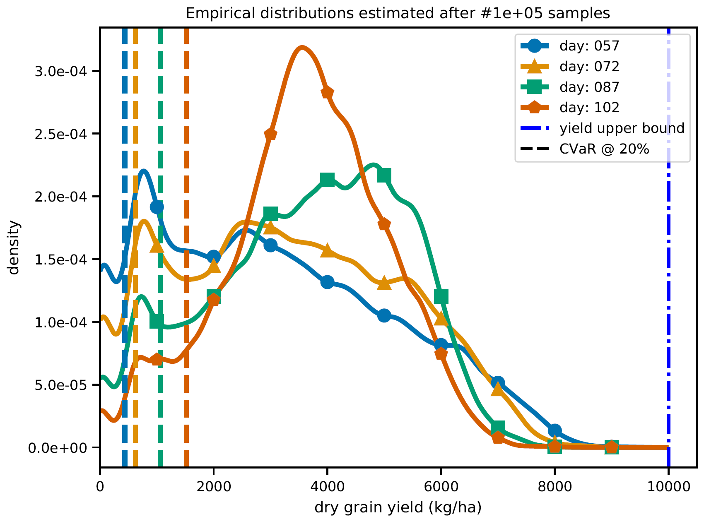
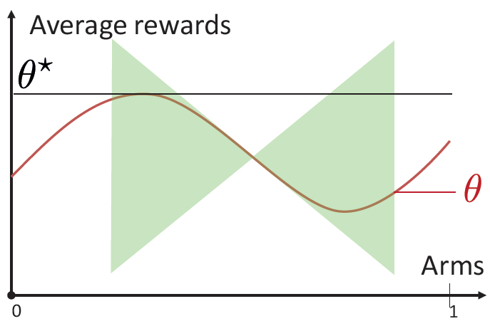
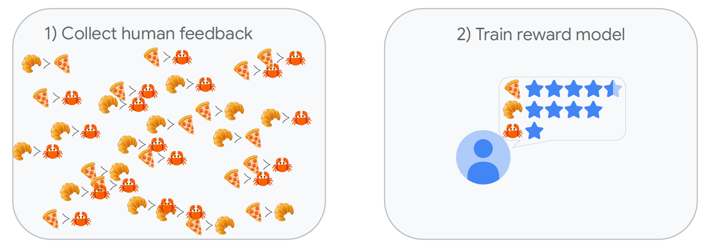

RECAP & PERSPECTIVE
Odalric-Ambrym Maillard
HORIBA
April 22, 2025

Road map
- What we have seen
- The Sim-to-Real Gap
- Other challenges: Risk-aversion, Structure, Reward model.
- Take home messages
What we have seen
- Stochastic bandits
- Regret minimization
- Bandit for sequential optimization
- Kernel bandits
- Applicative context: microscopy
The Sim-to-Real Gap
\(\Rightarrow\)
 \(\Rightarrow\)

Other challenges: Risk-aversion.
Maximizing expectation is not always desirable.


Other challenges: Structure.
Lipschitz structure

- Linear
- Unimodal
- Ranked
- Contextual
- Linearly constrained
- ...
Reward models From preferences

Bradley-Terry model: \( \mathcal{P}(y \succ y') = \sigma(r(y|x)-r(y'|x))\) Warning
Beyond
- Non-stationary bandits
-
Non-parametric bandits
-
Instrinsic reward model